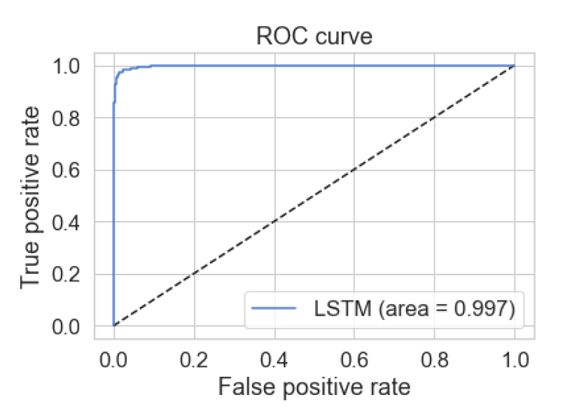

Artificial Intelligence
As part of this chapter, the analysis of an EEG data-set to identify if a child is affected or not by autism will be outlined. Both Machine Learning (ML) and Deep Learning (DL) approaches used to tackle this task will be examined. Additionally, a Computer Vision based approach to ASD screening will be proposed.
Faces Responses in Children with ASD
Children affected by ASD usually show difficulties in comprehending other people's emotions. A study carried out in 2012 by Fabio Apicella, Federico Sicca et al. ("Fusiform Gyrus responses to neutral and emotional faces in children with Autism Spectrum Disorders: a High Density ERP study" [32]) aimed to register the EEG response of a group of children (some of which were affected by ASD and some who weren't) to examine their reaction to different forms of stimuli (eg. Happy/Sad/Neutral faces, and images of Cartoons and Trees).
Figure 4.1: Stimuli used. Image reproduced from: [32]
Informed consent was given by all the children parent's before undertaking any measurement. Upon Ethics Approval, I made use of the EEG data (in the time-domain) collected during this study to determine whether it was possible to accurately classify which children were affected or not by ASD using Machine Learning. The data-set consisted of the EEG data (for all the five stimuli repeated multiple times) collected from twelve children affected by ASD and twelve who weren't.
The data originally provided was in a MATLAB format. After a first exploratory analysis, I then decided to convert each file in a CSV format and then merged them so to perform my analysis using Python. I ended up making six CSV files, one for each of the five stimuli and one containing all the five stimuli together.
For each child, the MATLAB data was stored using a three dimensional array. The first dimension represented the number of EEG channels (128), the second dimension represented the number of time-steps (250) and the third dimension the number of repetitions (between 20 and 80, depending on the child). Once the data had been converted in the CSV format, I structured it in a table. This table has 129 columns (one for each channel and one to label the data as either typical or ASD), every 250 rows was stored one stimulus repetition with their correspondent label.
The data-set containing all the five stimulus, had been demonstrated to be balanced, containing 49.03% of the data of children without ASD and 50.97% of the data of ASD children.
All the plots obtained during a first exploration of the data using MATLAB are present in Appendix C. The ML and Deep Leaning results obtained using the individual data-sets for each stimulus are instead present in Appendix D.
ML Classification
Once I constructed the full data-set containing all the five stimuli, I then decided to try to perform a classification task using Machine Learning. In order to do so, I made use of many Python libraries such as: pandas, numpy, matplotlib.pyplot, sklearn and itertools.
The pre-processing part consisted of, firstly loading the data, standardising it and then dividing it in training (70%) and test sets (30%) for both the inputs (X) and outputs values (Y). The total number of rows in the data-set was equal to 1906500 (934750 rows about typical children EEG data and 971750 about ASD data). Because of the 70% against 30% train/test split ratio, 5338 predictions were made during the training set (1334550/250 time-steps) and 2288 predictions during the test set (571950/250 time-steps).
I finally decided to train and then test the binary classification results using different algorithms such as: Logistic Regression, Support Vector Machines (SVM), Decision Trees, Linear Discriminant analysis (LDA) and Gaussian Naive Bayes Classifier (GNB). The classification results are show in Table 4.1. At the output, a zero represent a typical child and a one represents a child affected by ASD. The models used attempted to identify if a child is affected or not by ASD using just a single stimulus repetition (128 channels × 250 timesteps × 1 repetition).
Table 4.1: ML Classification Accuracy
The Decision Tree achieved the most accurate result. Decision Tree is a type of supervised learning algorithm which can be used for either classification or regression tasks. What distinguishes Decision Tree from other ML algorithms, is their ability to display their decision making process using an upside-down tree like representation. In the tree, each node represents a feature in the data-set, each branch a decision rule and each leaf a decision outcome. In this implementation, I decided to use the CART (Classification and Regression Trees) algorithm implementation which makes use of the Gini Index as metric (code available in Appendix B, Listing 3). Appendix E shows the beginning of the decision making process made by the Decision Tree to decide its classification criteria for this data-set.
Performing PCA (to reduce data dimensionality to two dimensions) on the data lead to a sharp decrease in accuracy (51% accuracy at maximum using a Decision Tree).
Figure 4.2: PCA Decision Tree Classification Results (0=Typical, 1=ASD)
The trained Decision Tree model has then been successfully saved and stored (using the pickle library) to be ready for later use.
Deep Learning Classification
To increase accuracy of results, I then decided to implement Neural Networks (LSTM and CNN). I preferred to use these typologies of ANN instead of a Feed-Forward one because of their ability to work with sequential data. Most of the libraries used for ML Classification have been reused for the Deep Learning implementation, also the train/test ratio split has remained unaltered.
Long Short-Term Memory
In order to code this Neutral Network I decided to use the Google Open Source Deep Learning library Tensor-Flow. After careful literature background research, I decided to design the ANN architecture following the "Human Activity Recognition using LSTMs on Android" Medium guide [32]. For this implementation, I decided to change the pre-processing stage and some of the architecture parameters in order to best suit the data-set shape and characteristics (pre-processing code available in Appendix B, Listing 4) .

Table 4.2: LSTM Parameters
Letting training this model for 50 epochs, using the parameters shown in Table 4.2, lead to an impressive overall validation accuracy of 96.935 % (The full training accuracy and loss evolution is present in Appendix F). From Figure 4.3, it can be witnessed that both the training/test loss and the training/test accuracy curves closely match. This confirms the correct L2 regularisation (Ridge Regression) parameter was chosen.
L2 regularisation aims to eliminate over-fitting by minimising the model complexity and loss. By using L2 regularisation, the model complexity is evaluated by summing and squaring all the model feature weights. One of the easier ways to identify overfitting in a model is by comparing the training and test sets loss functions. If the two are really similar, our model is successfully able to generalise to new data without losing accuracy. If instead the two functions are very dissimilar, our model might be able to perform well in the training phase but not during the test phase. Indicating that during the training our model overfitted the data learning also irrelevant information (such as noise) and was not able to correctly classify new data (Bias-Variance Trade-off).
Figure 4.3: LSTM training/test loss and accuracy against epochs
On the other side, the LSTM required a considerable amount of memory and time to train which could potentially become a problem if working with a greater amount of data. To avoid having to retrain the model, it was successfully saved and stored using the pickle library. Different metrics have been performed to test the overall efficiency of the model such as calculating the Confusion Matrix and AUC-ROC curve.
Table 4.3: LSTM Confusion Matrix
From the Confusion Matrix it is then possible to calculate the model Sensitivity and Specificity.

Figure 4.4: LSTM ROC plot
All these metrics confirmed that the model did not overfit the data as seen in Figure 4.3. In fact:
-
The ROC curve score was close to 1 (0.997).
-
The number of False Positives and False Negatives in the Confusion Matrix were close to each-other (therefore the model gave the same weight to both classes).
-
Both the Sensitivity and Specificity results were higher than 97%.
Convolutional Neural Network
I finally decided to design a CNN in the hope to construct a faster model than the LSTM that would still able to achieve high accuracy. In order to construct the network architecture, I decided to use the Keras Python library.
The model consisted of:
-
One 2D Convolutional Layer of 64 filters, a kernel size of 5 × 5, a ReLU (Rectified Linear Unit, Equation 4.3) function and same padding.

-
Another 2D Convolutional Layer having 32 filters, a kernel size of 5 × 5, a ReLU (rectified linear unit) function, same padding and an L2 regularisation coefficient of 0.01 (to prevent overfitting).
-
A 2D MaxPooling layer of 2 × 2 size.
-
A Dropout layer of 0.2 intensity (in order to avoid over-fitting the data).
-
A layer to first flatten the data from three dimensions to just one, and then another one to condense the input to give to the classifier 128 features (always using the ReLU function and L2 regularisation).
-
A second Dropout layer of 0.5 intensity.
-
Finally, a Dense layer (of two neurons) to produce the classification result, using a Softmax activation function. The Softmax function (Equation 4.4) will take in this case the two inputs from the neurons and convert them in two probabilities that sums up to one. The greater probability was rounded up/down to either one or zero to represent the CNN output choice (Typical(0), ASD(1)).

In order to optimise the training, the Adam (Adaptive Moment Estimation) gradient descent algorithm was used, and the cross-entropy function was used to compute the model loss. The cross-entropy function (Hy'(y)), in a binary classification case can be calculated by using Equation 4.5.

This model achieved an overall validation accuracy of 94.58% in just thirty epochs of training.
 Figure 4.5: CNN Model Training
Figure 4.5: CNN Model Training
Both the LSTM and the CNN are able to classify if a child is affected or not by ASD just by observing one stimulus repetition (128 channels, 250 time-steps, 1 repetition, 1 stimulus). The overall accuracy of the CNN was 2% lower compared to the LSTM one, but the training time and amount of power needed to run this model was much lower. Also this model was successfully saved and stored (in a json and h5 file type) for later use (Code available in Appendix B, Listing 5).
Also in this case different metrics have been performed to test the overall efficiency of the model such as calculating the Confusion Matrix and AUC-ROC Curve.
Table 4.4: CNN Confusion Matrix
From the Confusion Matrix it is then possible to calculate the model Sensitivity and Specificity.

 Figure 4.6: CNN ROC Curve
Figure 4.6: CNN ROC Curve
For the same reasons examined in the LSTM analysis, the CNN model does not seem to be affected by over-fitting. However, the CNN performed overall worse than the LSTM. That's because of the bigger difference between the registered False Positives and False Negatives in the Confusion Matrix, which caused the Specificity score to be negatively affected.
Autism Study Using Behaviour Imaging
Computer Vision is an AI area which has seen exponential improvements during the last few years, especially because of the introduction of Convolutional Neural Networks. According to some research papers such as "Computer vision and behavioural phenotyping: an autism case study" [34] and "Behaviour Imaging: Using Computer Vision to Study Autism" [35], this subject can potentially have an huge impact in ASD detection in children. This can be done by:
-
Making Computer Vision games to test child's ability to recognise and imitate facial expressions or feelings.
-
Recording the child-therapist sessions to then examine the recording to find out if the child has shown: some reaction delay to the applied stimulus, any repetitive behaviour or any abnormal walking/speaking behaviour.
Game Application
As part of this project I decided to design a game to test a child's ability to make a series of facial expressions. In order to realise this game, I partially followed the "Real Time Facial Expression Recognition on Streaming Data" post by Sefik Ilkin Serengil [36] to make use of his pre-trained model for facial expression recognition. I successively coded the game using Python libraries such as: cv2, keras, tkinter and PIL.
The game interface is formed by two windows. In the first one, the user is told if their face is correctly detected and what facial expression they should perform (Figure 4.7 (a)). In the second one, the camera recording is displayed and if a face is detected an empty rectangle will cover the face area displaying on the top left corner the detected expression (Figure 4.7 (b)). Once the user has made the asked expression, a pop-up window will appear to congratulate the user and the first window will update to ask to make a different face expression. The list of available face expressions consist of: angry, fear, happy, sad, surprise and neutral faces.
 Figure 4.7: Computer Vision Game
Figure 4.7: Computer Vision Game